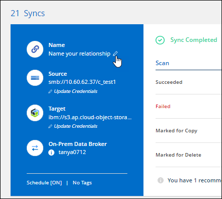
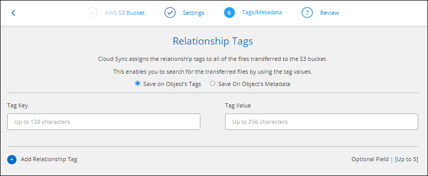

Versionshinweise
Versionshinweise
Neuerungen bei der BlueXP Kopier- und Synchronisierungsfunktion
 Änderungen vorschlagen
Änderungen vorschlagen
Erfahren Sie mehr über die Neuerungen bei der BlueXP Kopier- und Synchronisierungsfunktion.
11 Februar 2024
Verzeichnisse nach regex filtern
Benutzer haben nun die Möglichkeit, Verzeichnisse mit regex zu filtern.
Bis 26. November 2023
Unterstützung für Cold-Storage-Klassen für Azure Blob
Azure Blob Cold-Storage-Tier ist jetzt beim Erstellen einer Sync-Beziehung verfügbar.
Unterstützung für die Region Tel Aviv bei AWS-Datenmaklern
Tel Aviv ist jetzt eine unterstützte Region, wenn er einen Daten-Broker in AWS erstellt.
Aktualisieren Sie auf die Node-Version für Daten-Broker
Alle neuen Daten-Broker verwenden jetzt Node-Version 21.2.0. Daten-Broker, die mit diesem Update nicht kompatibel sind, wie CentOS 7.0 und Ubuntu Server 18.0, funktionieren nicht mehr mit der BlueXP Kopier- und Synchronisierungsfunktion.
3 September 2023
Dateien durch regex ausschließen
Benutzer haben nun die Möglichkeit, Dateien mit regex auszuschließen.
Fügen Sie bei der Erstellung des Azure Daten-Brokers S3 Schlüssel hinzu
Benutzer können jetzt bei der Erstellung eines Azure Datenbrokers AWS S3 Zugriffsschlüssel und geheime Schlüssel hinzufügen.
6 August 2023
Verwenden Sie vorhandene Azure Sicherheitsgruppen, wenn Sie einen Daten-Broker erstellen
Benutzer haben nun die Möglichkeit, vorhandene Azure Sicherheitsgruppen zu verwenden, wenn sie einen Daten-Broker erstellen.
Das Dienstkonto, das beim Erstellen des Datenbrokers verwendet wird, muss über folgende Berechtigungen verfügen:
-
„Microsoft.Network/networkSecurityGroups/securityRules/read"
-
„Microsoft.Network/networkSecurityGroups/read"
Verschlüsseln Sie Daten bei der Synchronisierung mit Google Storage
Benutzer haben nun die Möglichkeit, beim Erstellen einer Synchronisierungsbeziehung zu einem Google Storage-Bucket als Ziel einen vom Kunden gemanagten Schlüssel anzugeben. Sie können Ihren Schlüssel manuell eingeben oder aus einer Liste Ihrer Schlüssel in einer Region auswählen.
Das Dienstkonto, das beim Erstellen des Datenbrokers verwendet wird, muss über folgende Berechtigungen verfügen:
-
Cloudkms.cryptkeys.list
-
Cloudkms.Schlüsselanhänger.list
9 Juli 2023
Entfernen Sie mehrere Synchronisierungsbeziehungen auf einmal
Benutzer können jetzt mehrere Synchronisierungsbeziehungen gleichzeitig in der Benutzeroberfläche löschen.
Nur ACL kopieren
Benutzer haben jetzt zusätzliche Optionen zum Kopieren von ACL-Informationen in CIF- und NFS-Beziehungen. Beim Erstellen oder Verwalten einer Synchronisierungsbeziehung können Sie nur Dateien kopieren, nur ACL-Informationen kopieren oder Dateien und ACL-Informationen kopieren.
Aktualisiert auf Node.js 20
Copy and Sync hat auf Node.js 20 aktualisiert. Alle verfügbaren Daten-Broker werden aktualisiert. Betriebssysteme, die mit diesem Update nicht kompatibel sind, können nicht installiert werden, und inkompatible vorhandene Systeme können Leistungsprobleme haben.
11 Juni 2023
Unterstützung für automatischen Abbruch innerhalb von Minuten
Aktive Synchronisierungen, die nicht abgeschlossen wurden, können jetzt mit der Funktion Sync Timeout nach 15 Minuten abgebrochen werden.
Metadaten der Zugriffszeit kopieren
In Beziehungen, einschließlich eines Dateisystems, kopiert die Funktion Copy for Objects nun Metadaten zur Zugriffszeit.
8 Mai 2023
Hardlink-Funktionen
Benutzer können nun feste Links für Synchronisierungen in ungesicherten NFS- zu NFS-Beziehungen einfügen.
Möglichkeit zum Hinzufügen von Benutzerzertifikaten für Datenmanager in sicheren NFS-Beziehungen
Benutzer können nun bei der Erstellung einer sicheren NFS-Beziehung ein eigenes Zertifikat für den Zieldatenmanager festlegen. Dabei müssen sie einen Servernamen festlegen und einen privaten Schlüssel und eine Zertifikat-ID angeben. Diese Funktion ist für alle Daten-Broker verfügbar.
Verlängerter Ausschlusszeitraum für kürzlich geänderte Dateien
Benutzer können jetzt Dateien ausschließen, die bis zu 365 Tage vor der geplanten Synchronisierung geändert wurden.
Beziehungen in der UI nach Beziehungs-ID filtern
Benutzer, die die RESTful API verwenden, können nun Beziehungen mithilfe von Beziehungs-IDs filtern.
Bis 2. April 2023
Zusätzliche Unterstützung für Azure Data Lake Storage Gen2-Beziehungen
Sie können jetzt Synchronisierungsbeziehungen mit Azure Data Lake Storage Gen2 als Quelle und Ziel mit folgenden Methoden erstellen:
-
Azure NetApp Dateien
-
Amazon FSX für ONTAP
-
Cloud Volumes ONTAP
-
On-Premises-ONTAP
Verzeichnisse nach vollständigem Pfad filtern
Zusätzlich zum Filtern von Verzeichnissen nach Namen können Sie nun Verzeichnisse nach ihrem vollständigen Pfad filtern.
7 März 2023
EBS-Verschlüsselung für AWS-Datenmanager
Sie können jetzt AWS-Daten-Broker-Volumes mit einem KMS-Schlüssel in Ihrem Konto verschlüsseln.
Februar 5 2023
Zusätzliche Unterstützung für Azure Data Lake Storage Gen2, ONTAP S3 Storage und NFS
Cloud Sync unterstützt jetzt zusätzliche Synchronisierungsbeziehungen für ONTAP S3 Storage und NFS:
-
ONTAP S3 Storage zu NFS
-
NFS zu ONTAP S3 Storage
Cloud Sync unterstützt zusätzlich Azure Data Lake Storage Gen2 als Quelle und Ziel für folgende Zwecke:
-
NFS-Server
-
SMB Server
-
ONTAP S3 Storage
-
StorageGRID
-
IBM Cloud Objekt-Storage
Führen Sie ein Upgrade auf das Amazon Web Services Data Broker Betriebssystem durch
Das Betriebssystem für AWS Data Broker wurde auf Amazon Linux 2022 aktualisiert.
3. Januar 2023
Zeigt die lokale Konfiguration des Datenmaklers auf der UI an
Es gibt jetzt eine Option Konfiguration anzeigen, mit der Benutzer die lokale Konfiguration jedes Datenmakers auf der Benutzeroberfläche anzeigen können.
Führen Sie ein Upgrade auf Azure und Google Cloud als Datenvermittler durch
Das Betriebssystem für Datenmakler in Azure und Google Cloud wurde auf die Rocky Linux 9.0 aktualisiert.
11 Dezember 2022
Verzeichnisse nach Namen filtern
Für Synchronisierungsbeziehungen steht jetzt eine neue Ausschließverzeichnisnamen-Einstellung zur Verfügung. Benutzer können maximal 15 Verzeichnisnamen aus ihrer Synchronisierung herausfiltern. Die Verzeichnisse .Copy-Offload, .Snapshot, ~Snapshot sind standardmäßig ausgeschlossen.
Zusätzliche Unterstützung für Amazon S3 und ONTAP S3 Storage
Cloud Sync unterstützt jetzt zusätzliche Synchronisierungsbeziehungen für AWS S3 und ONTAP S3 Storage:
-
AWS S3 zu ONTAP S3 Storage
-
ONTAP S3 Storage zu AWS S3
Oktober 30 2022
Kontinuierliche Synchronisierung von Microsoft Azure aus
Die Einstellung „Continuous Sync“ wird nun über einen Azure-Quell-Storage-Bucket in den Cloud-Storage mithilfe eines Azure-Daten-Brokers unterstützt.
Nach der ersten Datensynchronisierung überwacht Cloud Sync Änderungen am Azure Storage-Quell-Bucket und synchronisiert kontinuierlich alle Änderungen am Ziel-Storage. Diese Einstellung ist verfügbar, wenn sie von einem Azure Storage Bucket zu Azure Blob Storage, CIFS, Google Cloud Storage, IBM Cloud Object Storage, NFS und StorageGRID synchronisiert wird.
Der Azure Daten-Broker benötigt eine benutzerdefinierte Rolle und die folgenden Berechtigungen, um diese Einstellung zu verwenden:
'Microsoft.Storage/storageAccounts/read',
'Microsoft.EventGrid/systemTopics/eventSubscriptions/write',
'Microsoft.EventGrid/systemTopics/eventSubscriptions/read',
'Microsoft.EventGrid/systemTopics/eventSubscriptions/delete',
'Microsoft.EventGrid/systemTopics/eventSubscriptions/getFullUrl/action',
'Microsoft.EventGrid/systemTopics/eventSubscriptions/getDeliveryAttributes/action',
'Microsoft.EventGrid/systemTopics/read',
'Microsoft.EventGrid/systemTopics/write',
'Microsoft.EventGrid/systemTopics/delete',
'Microsoft.EventGrid/eventSubscriptions/write',
'Microsoft.Storage/storageAccounts/write'September 4 2022
Zusätzliche Unterstützung für Google Drive
-
Cloud Sync unterstützt jetzt zusätzliche Synchronisierungsbeziehungen für Google-Laufwerk:
-
Google Drive zu NFS-Servern
-
Google Drive zu SMB-Servern
-
-
Sie können auch Berichte für Synchronisierungsbeziehungen erstellen, die Google Drive enthalten.
Kontinuierliche Sync-Verbesserung
Sie können jetzt die Einstellung kontinuierliche Synchronisierung für die folgenden Arten von Synchronisierungsbeziehungen aktivieren:
-
S3-Bucket auf einen NFS-Server
-
Google Cloud Storage auf einen NFS-Server übertragen
E-Mail-Benachrichtigungen
Sie können jetzt Cloud Sync Benachrichtigungen per E-Mail erhalten.
Um die Benachrichtigungen per E-Mail zu erhalten, müssen Sie die Einstellung Benachrichtigungen auf der Synchronisierungsbeziehung aktivieren und dann die Einstellungen für Benachrichtigungen und Benachrichtigungen in BlueXP konfigurieren.
31 Juli 2022
Google Drive
Daten können jetzt von einem NFS-Server oder SMB-Server zu Google Drive synchronisiert werden. Sowohl „Mein Laufwerk“ als auch „freigegebene Laufwerke“ werden als Ziele unterstützt.
Bevor Sie eine Synchronisierungsbeziehung mit Google Drive erstellen können, müssen Sie ein Servicekonto einrichten, das über die erforderlichen Berechtigungen und einen privaten Schlüssel verfügt. "Erfahren Sie mehr über die Anforderungen von Google Drive".
Zusätzliche Unterstützung für Azure Data Lake
Cloud Sync unterstützt jetzt zusätzliche Synchronisierungsbeziehungen für Azure Data Lake Storage Gen2:
-
Amazon S3 zu Azure Data Lake Storage Gen2
-
IBM Cloud Objekt-Storage für Azure Data Lake Gen2
-
StorageGRID zu Azure Data Lake Storage Gen2
Neue Möglichkeiten zur Einrichtung von Synchronisierungsbeziehungen
Wir haben zusätzliche Möglichkeiten hinzugefügt, Synchronisierungsbeziehungen direkt aus BlueXP's Canvas einzurichten.
Drag-and-Drop
Sie können jetzt eine Synchronisierungsbeziehung aus dem Canvas einrichten, indem Sie eine Arbeitsumgebung auf einer anderen ziehen und ablegen.

Einrichtung auf der rechten Seite
Sie können jetzt eine Synchronisierungsbeziehung für Azure Blob Storage oder für Google Cloud Storage einrichten, indem Sie die Arbeitsumgebung auf dem Canvas auswählen und dann im rechten Fenster die Option zur Synchronisierung auswählen.

3 Juli 2022
Unterstützung für Azure Data Lake Storage Gen2
Daten können jetzt von einem NFS-Server oder SMB-Server zu Azure Data Lake Storage Gen2 synchronisiert werden.
Wenn Sie eine Synchronisierungsbeziehung erstellen, die Azure Data Lake enthält, müssen Sie Cloud Sync den Verbindungsstring für das Storage-Konto angeben. Hierbei muss es sich um eine reguläre Verbindungszeichenfolge und nicht um eine SAS-Signatur (Shared Access Signature) handelt.
Kontinuierliche Synchronisierung von Google Cloud Storage
Die Einstellung für Continuous Sync wird jetzt von einem Google Cloud Storage-Quell-Bucket zu einem Cloud-Storage-Ziel unterstützt.
Nach der ersten Datensynchronisierung überwacht Cloud Sync Änderungen am Google Cloud Storage Quell-Bucket und synchronisiert kontinuierlich alle Änderungen am Ziel-Storage. Diese Einstellung ist verfügbar, wenn Sie von einem Google Cloud Storage Bucket zu S3, Google Cloud Storage, Azure Blob Storage, StorageGRID oder IBM Storage synchronisieren.
Das mit Ihrem Datenvermittler verknüpfte Servicekonto benötigt zur Verwendung dieser Einstellung folgende Berechtigungen:
- pubsub.subscriptions.consume
- pubsub.subscriptions.create
- pubsub.subscriptions.delete
- pubsub.subscriptions.list
- pubsub.topics.attachSubscription
- pubsub.topics.create
- pubsub.topics.delete
- pubsub.topics.list
- pubsub.topics.setIamPolicy
- storage.buckets.updateNeue regionale Unterstützung für Google Cloud
Der Cloud Sync-Datenvermittler wird jetzt in folgenden Google-Cloud-Regionen unterstützt:
-
Columbus (USA-öst5)
-
Dallas (USA-Süd-1)
-
Madrid (europa-Südwest1)
-
Mailand (europa-West8)
-
Paris (europawest9)
Neuer Maschinentyp für Google Cloud
Der Standardmaschinentyp für den Datenvermittler in Google Cloud ist jetzt n2-Standard-4.
6. Juni 2022
Kontinuierliche Synchronisierung
Eine neue Einstellung ermöglicht kontinuierliche Synchronisierung von Änderungen von einem S3-Quell-Bucket zu einem Ziel.
Nach der ersten Datensynchronisierung überwacht Cloud Sync Änderungen am S3 Quell-Bucket und synchronisiert kontinuierlich alle Änderungen am Zielspeicherort. Es ist nicht erforderlich, die Quelle in geplanten Intervallen erneut zu scannen. Diese Einstellung ist nur verfügbar, wenn die Synchronisierung von einem S3-Bucket zu S3, Google Cloud Storage, Azure Blob Storage, StorageGRID oder IBM Storage erfolgt.
Beachten Sie, dass die mit Ihrem Daten-Broker verknüpfte IAM-Rolle folgende Berechtigungen benötigt, um diese Einstellung zu verwenden:
"s3:GetBucketNotification",
"s3:PutBucketNotification"Diese Berechtigungen werden automatisch allen von Ihnen erstellten neuen Datenmaklern hinzugefügt.
Zeigt alle ONTAP Volumes an
Wenn Sie eine Synchronisierungsbeziehung erstellen, zeigt Cloud Sync jetzt alle Volumes auf einem Cloud Volumes ONTAP Quellsystem, On-Premises-ONTAP Cluster oder FSX für ONTAP Filesystem an.
Zuvor würde Cloud Sync nur die Volumes anzeigen, die mit dem ausgewählten Protokoll übereinstimmt. Nun werden alle Volumes angezeigt, aber alle Volumes, die nicht mit dem ausgewählten Protokoll übereinstimmen oder über keine Freigabe oder einen Export verfügen, werden grau dargestellt und können nicht ausgewählt werden.
Tags werden in Azure Blob kopiert
Wenn Sie eine synchrone Beziehung erstellen, bei der Azure Blob das Ziel ist, können Sie mit Cloud Sync nun Tags in den Azure Blob-Container kopieren:
-
Auf der Seite Einstellungen können Sie die Einstellung für Objekte verwenden, um Tags aus der Quelle in den Azure Blob-Container zu kopieren. Dies wird zusätzlich zum Kopieren von Metadaten verwendet.
-
Auf der Seite Tags/Metadaten können Sie Blob-Index-Tags angeben, die auf den Objekten festgelegt werden, die in den Azure Blob-Container kopiert werden. Zuvor konnten Sie nur Beziehungsmetadaten angeben.
Diese Optionen werden unterstützt, wenn Azure Blob Ziel ist und als Quelle entweder Azure Blob oder ein S3-kompatibler Endpunkt (S3, StorageGRID oder IBM Cloud Object Storage) bereitgestellt wird.
Mai 2022
Zeitüberschreitung bei der Synchronisierung
Für Synchronisierungsbeziehungen steht jetzt eine neue Sync Timeout-Einstellung zur Verfügung. Mit dieser Einstellung können Sie festlegen, ob Cloud Sync eine Datensynchronisation abbrechen soll, wenn die Synchronisierung in der angegebenen Anzahl an Stunden oder Tagen nicht abgeschlossen ist.
Benachrichtigungen
Für Synchronisierungsbeziehungen steht jetzt eine neue Notifications-Einstellung zur Verfügung. Mit dieser Einstellung können Sie festlegen, ob Cloud Sync Benachrichtigungen im Benachrichtigungscenter von BlueXP empfangen werden sollen. Benachrichtigungen für erfolgreiche Datensynchronisation, fehlerhafte Datensynchronisation und stornierte Datensynchronisierungen sind möglich.

3. April 2022
Verbesserungen der Data Broker-Gruppe
Wir haben verschiedene Verbesserungen an den Data Broker-Gruppen vorgenommen:
-
Sie können einen Daten-Broker nun in eine neue oder vorhandene Gruppe verschieben.
-
Sie können nun die Proxy-Konfiguration für einen Daten-Broker aktualisieren.
-
Und schließlich können Sie auch Datenmaklergruppen löschen.
Dashboard-Filter
Sie können jetzt den Inhalt des Sync-Dashboards filtern, um Synchronisierungsbeziehungen, die einem bestimmten Status entsprechen, leichter zu finden. Sie können beispielsweise nach Synchronisierungsbeziehungen filtern, die einen fehlgeschlagenen Status haben

3 März 2022
Sortierung im Armaturenbrett
Sie sortieren das Dashboard jetzt nach dem synchronen Beziehungsnamen.

Verbesserung der sinnvollen Integration von Daten
In der vorherigen Version haben wir die Cloud Sync Integration in Cloud Data Sense eingeführt. In diesem Update haben wir die Integration verbessert, indem wir die Erstellung der Synchronisierungsbeziehung einfacher gestalten. Nachdem Sie eine Datensynchronisierung aus Cloud Data Sense initiiert haben, sind alle Quellinformationen in einem einzigen Schritt enthalten und müssen nur einige wichtige Details eingeben.

6 Februar 2022
Erweiterung um Data Broker-Gruppen
Wir haben die Interaktion mit Datenmaklern verändert, indem wir den Schwerpunkt auf Data Broker_groups_ legen.
Wenn Sie beispielsweise eine neue Synchronisierungsbeziehung erstellen, wählen Sie den Datenmanager Group aus, der mit der Beziehung verwendet werden soll, anstatt einen bestimmten Datenmanager.

Auf der Registerkarte Manage Data Brokers zeigen wir auch die Anzahl der Synchronisierungsbeziehungen an, die eine Datenmaklergruppe verwaltet.

PDF-Berichte herunterladen
Sie können nun eine PDF eines Berichts herunterladen.
Januar 2022
Neue Sync-Beziehungen für Box
Zwei neue Synchronisierungsbeziehungen werden unterstützt:
-
Von Azure NetApp Files integriert
-
Box zu Amazon FSX für ONTAP
Beziehungsnamen
Sie können nun jedem Ihrer Synchronisierungsbeziehungen einen aussagekräftigen Namen geben, um den Zweck jeder Beziehung leichter zu identifizieren. Sie können den Namen hinzufügen, wenn Sie die Beziehung erstellen, und jederzeit danach.

Private S3-Links
Bei der Synchronisierung von Daten mit und von Amazon S3 haben Unternehmen die Wahl, ob sie einen S3 Private Link verwenden möchten. Wenn der Daten-Broker Daten aus der Quelle in das Ziel kopiert, durchläuft er einen privaten Link.
Beachten Sie, dass die IAM-Rolle, die Ihrem Datenvermittler zugeordnet ist, zur Verwendung dieser Funktion folgende Berechtigungen benötigen:
"ec2:DescribeVpcEndpoints"Diese Berechtigung wird automatisch allen neuen, von Ihnen erstellten Datenmaklern hinzugefügt.
Glacier Instant Retrieval
Sie können jetzt die Storage-Klasse Glacier Instant Retrieval auswählen, wenn Amazon S3 das Ziel in einer synchronen Beziehung ist.
ACLs vom Objekt-Storage zu SMB-Freigaben
Cloud Sync unterstützt jetzt das Kopieren von ACLs vom Objekt-Storage in SMB-Freigaben. Zuvor wurde nur das Kopieren von ACLs aus einer SMB-Freigabe in Objekt-Storage unterstützt.
SFTP zu S3
Das Erstellen einer Synchronisierungsbeziehung von SFTP zu Amazon S3 wird nun in der Benutzeroberfläche unterstützt. Diese Synchronisierungsbeziehung wurde bereits zuvor nur durch die API unterstützt.
Verbesserung der Tabellenansicht
Die Tabellenansicht auf dem Dashboard wurde für eine einfache Bedienung neu gestaltet. Wenn Sie Weitere Informationen auswählen, filtert Cloud Sync das Dashboard, um Ihnen mehr Informationen über diese bestimmte Beziehung anzuzeigen.

Unterstützung der Region Jarkarta
Cloud Sync unterstützt jetzt die Implementierung des Datenmaklers in der Region AWS Asien-Pazifik (Jakarta).
28. November 2021
ACLs von SMB zu Objekt-Storage
Cloud Sync kann jetzt Zugriffssteuerungslisten (ACLs) kopieren, wenn eine synchrone Beziehung von einer SMB-Quellfreigabe zum Objekt-Storage eingerichtet wird (außer für ONTAP S3).
Cloud Sync unterstützt das Kopieren von ACLs vom Objekt-Storage in SMB-Freigaben nicht.
Lizenzen aktualisieren
Sie können nun die erweiterten Cloud Sync Lizenzen aktualisieren.
Wenn Sie eine Cloud Sync Lizenz von NetApp erworben haben, können Sie die Lizenz erneut hinzufügen, um das Ablaufdatum zu aktualisieren.
Anmeldedaten für das Update-Feld
Sie können jetzt die Box-Anmeldeinformationen für eine bestehende Synchronisierungsbeziehung aktualisieren.
Oktober 31 2021
Box-Unterstützung
Box-Unterstützung ist jetzt in der Benutzeroberfläche von Cloud Sync als Vorschau verfügbar.
Feld kann die Quelle oder das Ziel in verschiedenen Arten von Synchronisierungsbeziehungen sein. "Zeigen Sie die Liste der unterstützten Synchronisierungsbeziehungen an".
Einstellung für Erstellungsdatum
Wenn ein SMB-Server die Quelle ist, können Sie mit einer neuen Einstellung für die Synchronisierungsbeziehung namens „Date created“ Dateien synchronisieren, die nach einem bestimmten Datum, vor einem bestimmten Datum oder zwischen einem bestimmten Zeitraum erstellt wurden.
Oktober 4 2021
Zusätzliche Box-Unterstützung
Cloud Sync unterstützt jetzt zusätzliche Synchronisierungsbeziehungen für "Kasten" Bei der Verwendung der Cloud Sync-API:
-
Amazon S3 zu Box
-
IBM Cloud Object Storage to Box
-
StorageGRID to Box
-
Auf einen NFS-Server übertragen
-
Auf SMB-Server übertragen
Berichte für SFTP-Pfade
Das ist jetzt möglich "Erstellen Sie einen Bericht" Für SFTP-Pfade.
September 2021
Unterstützung von FSX für ONTAP
Sie können jetzt Daten mit einem Amazon FSX für ONTAP Filesystem synchronisieren.
August 2021
Anmeldedaten aktualisieren
Mit Cloud Sync können Sie den Daten-Broker nun mit den neuesten Zugangsdaten für das Quell- oder Ziel-System in einer bestehenden Synchronisierungsbeziehung aktualisieren.
Diese Verbesserung kann hilfreich sein, wenn Sie Ihre Sicherheitsrichtlinien vorschreiben, dass Sie die Anmeldeinformationen regelmäßig aktualisieren müssen. "Hier erfahren Sie, wie Sie Anmeldedaten aktualisieren".

Tags für Objekt-Storage-Ziele
Beim Erstellen einer Synchronisierungsbeziehung können Sie nun Tags in einer Synchronisierungsbeziehung zum Objekt-Storage-Ziel hinzufügen.
Das Hinzufügen von Tags wird unterstützt mit Amazon S3, Azure Blob, Google Cloud Storage, IBM Cloud Object Storage und StorageGRID.

Support für Box
Cloud Sync unterstützt jetzt "Kasten" Wenn Sie die Cloud Sync-API verwenden, dient sie als Quelle in einer Synchronisierungsbeziehung zu Amazon S3, StorageGRID und IBM Cloud Objekt-Storage.
Öffentliche IP für Datenvermittler in Google Cloud
Wenn Sie einen Daten-Broker in Google Cloud bereitstellen, haben Sie nun die Möglichkeit zu wählen, ob Sie eine öffentliche IP-Adresse für die VM-Instanz aktivieren oder deaktivieren möchten.
Dual-Protokoll-Volume für Azure NetApp Files
Wenn Sie das Quell- oder Ziel-Volume für Azure NetApp Files auswählen, zeigt Cloud Sync jetzt unabhängig vom gewählten Protokoll ein Dual-Protokoll-Volume an.
7 Juli 2021
ONTAP S3 Storage und Google Cloud Storage
Cloud Sync unterstützt jetzt über die Benutzeroberfläche die Synchronisierungsbeziehungen zwischen ONTAP S3 Storage und einem Google Cloud Storage Bucket.
Objekt-Metadaten-Tags
Cloud Sync kann jetzt bei der Erstellung einer Synchronisierungsbeziehung und bei der Aktivierung einer Einstellung Objekt-Metadaten und -Tags zwischen objektbasiertem Storage kopieren.
Unterstützung von HashiCorp Vaults
Sie können den Daten-Broker jetzt so einrichten, dass er über einen externen HashiCorp Vault auf Anmeldeinformationen zugreifen kann, indem Sie sich mit einem Google Cloud-Servicekonto authentifizieren.
Tags oder Metadaten für S3-Bucket definieren
Beim Einrichten einer Synchronisierungsbeziehung zu einem Amazon S3-Bucket können Sie im Sync-Beziehungsassistenten jetzt die Tags oder Metadaten definieren, die Sie in den Objekten im S3-Ziel-Bucket speichern möchten.
Die Tagging-Option war bisher Teil der Einstellungen für Synchronisierungsbeziehungen.
7. Juni 2021
Storage-Klassen in Google Cloud
Wenn ein Google Cloud Storage Bucket in einer Synchronisierungsbeziehung Ziel ist, können Sie jetzt die Storage-Klasse auswählen, die Sie verwenden möchten. Cloud Sync unterstützt folgende Speicherklassen:
-
Standard
-
Nearline
-
Coldline
-
Archivierung
Mai 2021
Fehler in Berichten
Sie können jetzt die in Berichten gefundenen Fehler anzeigen und den letzten Bericht oder alle Berichte löschen.
Attribute vergleichen
Für jede Synchronisationsbeziehung steht jetzt eine neue Compare by-Einstellung zur Verfügung.
Mit dieser erweiterten Einstellung können Sie festlegen, ob Cloud Sync bestimmte Attribute vergleichen soll, wenn Sie feststellen, ob sich eine Datei oder ein Verzeichnis geändert hat und erneut synchronisiert werden soll.
11 April 2021
Der Standalone-Cloud Sync-Service wird außer Betrieb genommen
Der Standalone-Cloud Sync-Service wurde außer Betrieb genommen. Sie sollten nun direkt über BlueXP auf Cloud Sync zugreifen, wo dieselben Funktionen und Merkmale zur Verfügung stehen.
Nachdem Sie sich bei BlueXP angemeldet haben, können Sie oben auf die Registerkarte „Sync“ wechseln und Ihre Beziehungen wie zuvor anzeigen.
Google Cloud Buckets für verschiedene Projekte
Beim Einrichten einer Synchronisierungsbeziehung können Sie in verschiedenen Projekten aus Google Cloud Buckets auswählen, wenn Sie dem Servicekonto des Datenmaklers die erforderlichen Berechtigungen bereitstellen.
Metadaten zwischen Google Cloud Storage und S3
Cloud Sync kopiert jetzt Metadaten zwischen Google Cloud Storage- und S3-Providern (AWS S3, StorageGRID und IBM Cloud Object Storage).
Starten Sie den Datenvermittler neu
Sie können jetzt einen Daten-Broker von Cloud Sync neu starten.

Meldung, wenn die neueste Version nicht ausgeführt wird
Cloud Sync erkennt jetzt, wenn ein Daten-Broker nicht die neueste Softwareversion ausführt. Diese Botschaft kann dazu beitragen, dass Sie die neuesten Funktionen und Funktionen erhalten.